BOGBogotá
CTGCartagena
- Equipo
- josedavid019 · IlTyrex
- Fecha
- 21 de noviembre de 2026
- Aplicación
- https://d3vmzvubx89wb6.cloudfront.net
- Repositorio
- https://github.com/ILTyrex/tripplannerAI
Resumen de los siete entregables que pide el enunciado y dónde encontrar cada uno.
| # | Entregable | Dónde está | Estado |
|---|---|---|---|
| 1 | Aplicación frontend publicada en Amazon S3 (con CloudFront) | https://d3vmzvubx89wb6.cloudfront.net | Desplegado |
| 2 | Backend serverless: Lambdas y API Gateway | Stack AWS SAM tripplanner-backend · 5 funciones · HTTP API con autorizador JWT de Cognito | Desplegado |
| 3 | DynamoDB con persistencia funcional | Tabla tripplanner-data (modelo en la sección 2) | Desplegado |
| 4 | Diagrama de arquitectura con los dos canales | Figura 1 de este documento · docs/arquitectura.svg | Incluido |
| 5 | Repositorio Git con historial de commits | https://github.com/ILTyrex/tripplannerAI (rama feat/trabajo-final-webapp) | Publicado |
| 6 | Documentación técnica | Este documento · versión editable: docs/DOCUMENTACION_TECNICA.md | Incluido |
| 7 | Demostración funcional en vivo | Guion de 12 pasos en la sección 9 · evidencias en la sección 11 | En la sustentación |
Abra https://d3vmzvubx89wb6.cloudfront.net y cree una cuenta con Crear cuenta (la confirmación es automática). En Asistente pulse la primera sugerencia (vacaciones en Cartagena): el Orchestrator consulta en paralelo al Flight Agent y al Weather Agent mediante MCP y muestra tarjetas de vuelos y de clima. Después escriba “Sí, crea el viaje con ese plan y genera el itinerario” y “Reserva el vuelo de ida más barato para los 3”. Cierre sesión y vuelva a entrar: el viaje, el itinerario y la reserva se recuperan desde DynamoDB. En Mis viajes detalle pulse Exportar PDF.
Exportación PDF del viaje: resumen, presupuesto estimado, clima, itinerario día por día y reservas con su estado. Detalle en la sección 10.
pytest sobre el Orchestrator (streaming, identidad JWT, parsing de vuelos/clima, Tools), Flight Agent, Weather Agent y el MCP de clima.
tests/backend_smoke.mjs: autenticación, CRUD, validaciones, rechazo de tarjetas, estado CONFIRMADA y aislamiento entre usuarios.
Evolución de TripPlanner (3 agentes Strands sobre Amazon Bedrock AgentCore) a una plataforma web completa: frontend web, backend serverless y persistencia en DynamoDB.
/runtimes/<ARN>/invocations de AgentCore con el access token de Cognito. AgentCore lo valida con su autorizador CUSTOM_JWT (discovery URL del User Pool + allowedClients). El endpoint de AgentCore responde CORS, por lo que no se necesita proxy.| Componente | Responsabilidad | Implementación |
|---|---|---|
| Frontend | Experiencia de usuario, Agent-Driven UI, exportación PDF | SPA HTML/CSS/JavaScript sin build (frontend/) |
| Amazon S3 + CloudFront | Publicación y distribución HTTPS del frontend | Bucket privado con Origin Access Control, cabeceras HSTS / X-Frame-Options |
| Amazon Cognito | Registro, inicio de sesión y emisión de JWT | User Pool tripplanner-users + cliente público + trigger PreSignUp |
| Amazon API Gateway | Expone las operaciones de negocio | HTTP API (stage prod), autorizador JWT, CORS, throttling, access logs |
| AWS Lambda | Lógica de negocio y validaciones | 5 funciones Python 3.13 · arm64 (backend/src) |
| Amazon DynamoDB | Persistencia (fuente de verdad) | Tabla única tripplanner-data |
| Amazon Bedrock AgentCore | Ejecución de los agentes y memoria | 3 runtimes (1 HTTP + 2 A2A) + 1 Memory con 3 estrategias |
| Strands Agents | Comportamiento agéntico y Tools | app/*Agent/main.py |
| MCP | Herramientas especializadas | Skiplagged (vuelos, HTTP) y servidor MCP propio sobre Open-Meteo (clima, stdio) |
| IAM | Seguridad | Una política por Lambda, política adicional del Orchestrator, OAC en S3 |
| AWS SAM / AgentCore CLI | Infraestructura como código | backend/template.yaml · agentcore/agentcore.json |
| Decisión | Justificación |
|---|---|
| Se conservan los 3 agentes (Orchestrator, Flight, Weather) comunicados por A2A | Requisito no negociable. Cada especialista mantiene su MCP; el Orchestrator coordina y agrega 11 Tools de negocio. |
Las Tools invocan las mismas Lambdas del Canal 1 (lambda:InvokeFunction) | Una sola implementación de negocio y validación. La identidad (userId) sale del sub del JWT validado por AgentCore, nunca de un argumento del modelo: aunque el LLM se equivoque o reciba una inyección de prompt, no puede tocar datos de otro usuario. |
Eventos SSE tipados: status, tool, text, ui, data_changed, error, done | Indicadores de procesamiento en tiempo real y tarjetas construidas desde datos estructurados (Agent-Driven UI), no desde texto. |
| Datos visuales emitidos por las Tools, no por el texto del LLM | Las tarjetas usan la respuesta real del MCP/Lambda. Flight y Weather devuelven la salida de su herramienta tal cual (FlightResponseAgent, WeatherResponseAgent). |
| MCP de clima propio (FastMCP, stdio) sobre Open-Meteo | El Weather Agent original usaba datos simulados. Open-Meteo es gratuito y sin API key; para fechas fuera de 16 días se usa el histórico del año anterior marcado como “estimado”. |
Tabla única con PK = USER#<sub> | Aislamiento estructural por usuario, consultas por prefijo sin escaneos, un solo recurso que proteger. |
| Cognito JWT en ambos canales (sin claves AWS en el navegador) | API Gateway valida el ID token; AgentCore valida el access token (client_id). El navegador solo conoce identificadores públicos. |
| Claude Haiku 4.5 para el Orchestrator, Nova Lite para especialistas | El Orchestrator genera argumentos estructurados (itinerarios por día) y encadena varias Tools; Haiku 4.5 es más fiable en tool-calling. Los especialistas hacen tareas simples. |
| Sesión del especialista reutilizada por conversación | El Orchestrator envía X-Amzn-Bedrock-AgentCore-Runtime-Session-Id estable a Flight/Weather para reutilizar el microVM caliente. |
| AWS SAM para backend y hosting | Infraestructura reproducible con sam deploy; el modelo de datos y los permisos quedan versionados. |
| AgentCore Memory | DynamoDB | |
|---|---|---|
| Propósito | Conversar mejor | Fuente de verdad del negocio |
| Contenido | Historial de la sesión, preferencias inferidas (USER_PREFERENCE), hechos (SEMANTIC), resúmenes (SUMMARIZATION) | Usuarios, preferencias explícitas, viajes, itinerarios, reservas |
| Uso | Se recupera como contexto en cada turno (/preferences/{actorId}/, /facts/{actorId}/) | Se lee y escribe solo mediante Lambdas |
Tabla tripplanner-data · PAY_PER_REQUEST · cifrado SSE · Point-in-Time Recovery. Claves: PK (HASH, S) y SK (RANGE, S). Sin índices secundarios: todos los patrones de acceso se resuelven con GetItem o Query sobre la partición del usuario.
| Entidad | PK | SK | Atributos principales |
|---|---|---|---|
| Usuario | USER#<sub> | PROFILE | userId, email, name, homeCity, createdAt |
| Preferencias | USER#<sub> | PREFS | budgetLevel, activityTypes[], preferredAirlines[], dietaryRestrictions[], seat, preferredDepartureTime, homeCity, notes |
| Viaje | USER#<sub> | TRIP#<tripId> | tripId, title, origin, destination, startDate, endDate, travelers, budget, currency, preferences[], notes, status |
| Itinerario | USER#<sub> | ITIN#<tripId> | tripId, destination, days[{day, date, title, activities[{time, title, description, location, category, estimatedCost}]}], notes |
| Reserva | USER#<sub> | RES#<reservationId> | reservationId, tripId, tripTitle, type, title, provider, date, time, location, details, quantity, price, currency, status, simulated, confirmationCode |
<sub> es el identificador inmutable del usuario en Cognito, tomado siempre del token validado. Todos los ítems tienen entityType, createdAt y updatedAt.
| Entidad | Valores | Reglas |
|---|---|---|
Viaje status | PLANIFICADO · CONFIRMADO · EN_CURSO · COMPLETADO · CANCELADO | Se crea en PLANIFICADO. |
Reserva status | SIMULADA PENDIENTE CONFIRMADA · CANCELADA | Se crea SIMULADA con código SIM-XXXXXX. SIMULADA PENDIENTE CANCELADA libre. CONFIRMADA solo la asigna un proveedor real: la API la rechaza porque no se integra proveedor. |
| Patrón | Operación |
|---|---|
| Perfil / preferencias | GetItem PK = USER#sub, SK = PROFILE | PREFS |
| Listar viajes del usuario | Query PK = USER#sub, SK begins_with TRIP# |
| Viaje + itinerario + reservas | GetItem TRIP#id + GetItem ITIN#id + Query RES# filtrando tripId |
| Itinerario de un viaje | GetItem PK = USER#sub, SK = ITIN#tripId |
| Reservas (filtros por viaje, estado, tipo) | Query PK = USER#sub, SK begins_with RES# + filtro en Lambda |
| Actualizar reserva | UpdateItem con ConditionExpression attribute_exists(SK) |
| Eliminar viaje | BatchWriteItem del viaje, su itinerario y sus reservas |
Base: https://ci97awf0j6.execute-api.us-east-2.amazonaws.com/prod. Todas las rutas requieren Authorization: Bearer <JWT de Cognito>. Formato JSON, fechas YYYY-MM-DD. CORS: origen de CloudFront y http://localhost:5173. Throttling: 20 req/s, ráfaga 50.
| Método | Ruta | Descripción | Body / parámetros | Respuesta |
|---|---|---|---|---|
| GET | /me | Perfil (se crea la primera vez) | — | 200 {profile, preferences} |
| PUT | /me | Actualizar perfil | name*, homeCity | 200 profile |
| GET | /preferences | Preferencias | — | 200 preferences |
| PUT | /preferences | Guardar (fusiona) | campos de preferencias | 200 preferences |
| POST | /trips | Crear viaje | destination*, startDate*, endDate*, origin, travelers (1-20), budget (mín. 0), currency, title, preferences[], notes | 201 trip |
| GET | /trips | Listar viajes | ?status= | 200 {trips[], count} |
| GET | /trips/{tripId} | Viaje + itinerario + reservas | — | 200 {trip, itinerary, reservations[]} |
| PUT | /trips/{tripId} | Actualizar viaje | cualquier campo + status | 200 trip |
| DELETE | /trips/{tripId} | Eliminar viaje con itinerario y reservas | — | 200 {deleted} |
| POST | /trips/{tripId}/itinerary | Crear itinerario | days[]*, notes, replace | 201 itinerary |
| PUT | /trips/{tripId}/itinerary | Modificar itinerario | days[] (completo) · day (un día) · notes | 200 itinerary |
| GET | /trips/{tripId}/itinerary | Consultar itinerario | — | 200 itinerary |
| POST | /reservations | Registrar reserva (SIMULADA) | tripId*, type* (FLIGHT/HOTEL/ACTIVITY), title*, date*, time, provider, price, currency, quantity, details | 201 reservation |
| GET | /reservations | Reservas del usuario | ?tripId= &status= &type= | 200 {reservations[], count} |
| PUT | /reservations/{reservationId} | Actualizar reserva / estado / viaje asociado | status, tripId, title, date, time, price… | 200 reservation |
Cuerpo uniforme {"error": {"code": "...", "message": "..."}}, en español y sin detalles internos.
| HTTP | Código | Cuándo | Ejemplo de mensaje |
|---|---|---|---|
| 400 | VALIDATION_ERROR | Tipos, rangos, fechas, estados, JSON inválido, datos de tarjeta, CONFIRMADA sin proveedor | “La fecha de regreso no puede ser anterior a la de salida.” |
| 401 | UNAUTHORIZED | Sin token o token inválido/expirado | “Unauthorized” |
| 403 | FORBIDDEN | Invocación directa de Lambda sin source=agent-tool | “Origen de invocación no permitido.” |
| 404 | NOT_FOUND | El recurso no existe o pertenece a otro usuario | “No existe el viaje … para este usuario.” |
| 429 | — | Throttling de API Gateway | “Too Many Requests” |
| 500 | INTERNAL_ERROR | Error inesperado (registrado en CloudWatch) | “Ocurrió un error interno. Intenta de nuevo.” |
Código en backend/src/. Utilidades comunes en common.py (despacho API Gateway / Tool del agente, validación, errores, serialización). Python 3.13 · arm64 · 256 MB · 15 s · X-Ray · logs JSON.
| Función | Handler · acciones | Validaciones | Permisos IAM (solo sobre tripplanner-data) |
|---|---|---|---|
tripplanner-trips | trips.handler · create / get / list / update / delete trip | campos requeridos, fechas ISO y orden, duración máx. 60 días, viajeros 1-20, presupuesto mín. 0, moneda y estado permitidos | GetItem, PutItem, UpdateItem, DeleteItem, Query, BatchWriteItem |
tripplanner-itineraries | itineraries.handler · create / update / get itinerary | viaje existente y propio, nº de días no mayor a la duración, día dentro del rango, hora HH:MM, máx. 15 actividades/día, categoría normalizada | GetItem, PutItem |
tripplanner-reservations | reservations.handler · create / list / update reservation | tipo permitido (acepta alias en español), fecha dentro del viaje, CONFIRMADA rechazada, hora HH:MM, rechazo de tarjetas | GetItem, PutItem, UpdateItem, Query |
tripplanner-users | users.handler · get / update profile y preferences | enums de presupuesto/asiento/horario, listas máx. 20, longitudes | GetItem, PutItem, UpdateItem |
tripplanner-presignup | presignup.handler (trigger Cognito) | auto-confirmación del registro (entorno académico) | ninguno |
common.py)sub) o invocación directa {"source":"agent-tool","action","userId","params"} desde el Orchestrator (solo su rol tiene lambda:InvokeFunction).cvv, card, tarjeta y números de 13–19 dígitos que pasan el algoritmo de Luhn.userId con formato válido, códigos HTTP correctos y mensajes sin trazas.node tests/backend_smoke.mjs crea dos usuarios en Cognito y ejecuta 15 verificaciones contra el API real, incluido que el usuario B no puede leer ni modificar datos del usuario A (404).Definidas con @tool de Strands en app/OrchestratorAgent/business_tools.py y main.py. Cada Tool de negocio invoca su Lambda con el sub del usuario autenticado y emite un evento ui.
| Tool | Parámetros | Lambda (acción) | Evento UI |
|---|---|---|---|
CreateTrip create_trip | destination, start_date, end_date, origin, travelers, budget, currency, title, preferences, notes | trips (create_trip) | trip |
GetTrips get_trips | status | trips (get_trips) | trips |
get_trip_details | trip_id | trips (get_trip) | trip, itinerary, reservations |
UpdateTrip update_trip | trip_id + campos opcionales | trips (update_trip) | trip |
CreateItinerary create_itinerary | trip_id, days[{day, title, activities[]}], notes | itineraries (create_itinerary) | itinerary |
UpdateItinerary update_itinerary | trip_id, days[] | day | notes | itineraries (update_itinerary) | itinerary |
CreateReservation create_reservation | trip_id, type, title, date, time, provider, location, details, price, currency, quantity, end_date, status | reservations (create_reservation) | reservation |
GetReservations get_reservations | trip_id, status, type | reservations (get_reservations) | reservations |
UpdateReservation update_reservation | reservation_id + campos opcionales | reservations (update_reservation) | reservation |
get_user_preferences | — | users (get_preferences) | — |
save_user_preferences | activity_types, budget_level, preferred_airlines, dietary_restrictions, seat, preferred_departure_time, home_city, notes | users (update_preferences) | preferences |
ask_flights | request | — (A2A Flight Agent MCP de vuelos) | flights |
ask_weather | request | — (A2A Weather Agent MCP de clima) | weather |
| Agente | Servidor MCP | Herramientas |
|---|---|---|
| Flight Agent | https://mcp.skiplagged.com/mcp (streamable HTTP, sin API key) | sk_resolve_iata, sk_flights_search |
| Weather Agent | app/WeatherAgent/weather_mcp_server.py (FastMCP stdio sobre Open-Meteo: geocodificación, pronóstico y archivo histórico) | get_weather_forecast (temperatura máx/mín, condición, % de lluvia, precipitación) |
InitiateAuth USER_PASSWORD_AUTH) ID token y access token.POST https://bedrock-agentcore.us-east-2.amazonaws.com/runtimes/<ARN>/invocations?qualifier=DEFAULT con Authorization: Bearer <access token>, cabecera X-Amzn-Bedrock-AgentCore-Runtime-Session-Id (id de conversación estable, mín. 33 caracteres) y cuerpo {"prompt": "..."}.Authorization al runtime (está en requestHeaderAllowlist); el Orchestrator toma el sub como identidad.text/event-stream; frontend/js/agent.js lee el ReadableStream y procesa cada evento:| Evento | Uso en la UI |
|---|---|
{"type":"status","text":"Flight Agent consultando vuelos (MCP de vuelos)…"} | Línea de estado con indicador animado |
{"type":"tool","name":"ask_weather"} | Chips de agentes / Tools activos |
{"type":"text","text":"..."} | Texto incremental con cursor |
{"type":"ui","block":{"type":"flights",...}} | Componente visual (ver tabla) |
{"type":"data_changed","entity":"trips"} | Refresca listados del Canal 1 |
{"type":"error","text":"..."} / {"type":"done"} | Mensaje de error / fin |
| Bloque | Componente (frontend/js/components.js) |
|---|---|
| flights | Tarjetas comparativas: aerolínea, hora de salida, escalas, código de vuelo, precio, diferencia con el más barato y botón “Reservar (simulada)” |
| weather | Tarjeta por día: condición con icono, máx/mín, barra de probabilidad de lluvia, marca “Est.” si es histórico |
| trip / trips | Tarjeta de viaje: destino, fechas, origen, viajeros, presupuesto, estado y días restantes |
| itinerary | Agenda por día con horario, categoría, lugar y costo estimado |
| reservation / reservations | Listado con estado Simulada / Pendiente / Confirmada / Cancelada y código |
| preferences | Resumen de preferencias guardadas |
ask_flights / ask_weather usan A2AAgent de Strands con un cliente httpx firmado con SigV4 (rol del runtime; permiso en iam-policy.json). Cada especialista usa su MCPClient de Strands y devuelve la salida autoritativa de su herramienta; el Orchestrator la convierte en evento ui (parse_flights, parse_weather).
Usuario: "Crea mi viaje" Orchestrator decide create_trip
lambda:Invoke tripplanner-trips {"source":"agent-tool","action":"create_trip","userId":<sub del JWT>}
Lambda valida y escribe en DynamoDB {"ok": true, "data": trip}
la Tool emite {"type":"ui","block":{"type":"trip"}} el agente redacta la respuesta la UI pinta la tarjeta
AgentCoreMemorySessionManager con actor_id = sub de Cognito y session_id = id de conversación. Recupera /preferences/{actorId}/ y /facts/{actorId}/ en cada turno; la estrategia SUMMARIZATION resume cada sesión. Las preferencias explícitas viven en DynamoDB y el agente las consulta con get_user_preferences.
| Requisito | Implementación |
|---|---|
| IAM de mínimo privilegio | Cada Lambda solo tiene las acciones DynamoDB que usa, sobre una tabla. El rol del Orchestrator solo puede invocar los runtimes Flight/Weather y las 4 Lambdas de negocio (app/OrchestratorAgent/iam-policy.json). El bucket S3 solo acepta lecturas de la distribución CloudFront (OAC). |
| Sin credenciales en el frontend | config.js solo contiene identificadores públicos (región, URL del API, ClientId, ARN del Orchestrator). Ninguna clave AWS en el navegador. |
| Validación en Lambda | Tipos, rangos, fechas, estados, tamaños y formatos (sección 4). |
| Control de acceso por usuario | userId = sub del token validado por API Gateway o AgentCore; claves PK = USER#sub. Recurso ajeno 404 (probado). |
| Protección de APIs | Autorizador JWT de Cognito, CORS restringido a CloudFront (+ localhost:5173), throttling 20/50, access logs. AgentCore con autorizador CUSTOM_JWT. |
| Manejo de errores | 400/401/403/404/429/500 con mensajes claros, sin trazas (registradas en CloudWatch). |
| Sin datos de tarjeta | No existen campos de pago; las Lambdas rechazan tarjetas (Luhn) y claves como cvv; el prompt del agente prohíbe pedirlos. |
| Transporte y cabeceras | HTTPS en CloudFront (redirección), API Gateway y AgentCore; HSTS, X-Frame-Options: DENY, nosniff. |
| Contenido del modelo | El frontend escapa todo el HTML antes de aplicar el Markdown mínimo (sin XSS). |
AWS CLI v2 con credenciales (us-east-2), AWS SAM CLI (uv tool install aws-sam-cli), Node.js 20+, AgentCore CLI, uv. Acceso en Bedrock a Claude Haiku 4.5 y Amazon Nova Lite.
cd backend
sam validate --lint
sam deploy # samconfig.toml: stack tripplanner-backend, us-east-2
Salidas usadas después: UserPoolId, UserPoolClientId, CognitoDiscoveryUrl, ApiUrl, FrontendUrl.
agentcore/aws-targets.json definir el target con la cuenta (en este repositorio: final).agentcore/agentcore.json OrchestratorAgent.authorizerConfiguration: discoveryUrl y allowedClients del paso 1. Ajustar la cuenta en app/OrchestratorAgent/iam-policy.json.agentcore deploy --target final -yagentcore/.cli/deployed-state.json los ARNs de Flight/Weather y el memoryId a los envVars (FLIGHTS_AGENT_ARN, WEATHER_AGENT_ARN, TRIP_MEMORY_ID, FLIGHTS_RUNTIME_ARN, WEATHER_RUNTIME_ARN) y volver a desplegar.bash scripts/deploy_frontend.sh # genera config.js, sincroniza con S3 e invalida CloudFront
node scripts/serve.mjs # frontend local en http://localhost:5173 (usa el despliegue AWS) node tests/backend_smoke.mjs # 15 verificaciones del Canal 1 pytest tests # 43 pruebas unitarias de agentes, MCP y Tools
| Recurso | Identificador |
|---|---|
| Frontend | https://d3vmzvubx89wb6.cloudfront.net |
| API Gateway | https://ci97awf0j6.execute-api.us-east-2.amazonaws.com/prod |
| Orchestrator Agent | tripplaner_OrchestratorAgent-Cj0BQ6H0du (HTTP · CUSTOM_JWT) |
| Flight Agent / Weather Agent | tripplaner_FlightsAgent-0gk2C36EvR / tripplaner_WeatherAgent-6TkRXe30Aa (A2A) |
| Memoria | tripplaner_TripPlannerMemory-Xk1G7GCxbv |
| DynamoDB | tripplanner-data |
| Stacks | tripplanner-backend (SAM) · AgentCore-tripplaner-final (AgentCore CDK) |
| Paso | Qué ocurre | Dónde se ve |
|---|---|---|
| 1 | Registro / inicio de sesión | Pantalla de acceso (Cognito) |
| 2 | Se envía el prompt (primera sugerencia del chat) | Asistente, HTTP streaming |
| 3 | El Orchestrator interpreta: 3 viajeros, 5.000.000 COP y propone fechas | “El Orchestrator está interpretando tu solicitud…” |
| 4 | Flight Agent consulta vuelos de ida y regreso vía MCP | Chip “Flight Agent” activo |
| 5 | Weather Agent consulta el clima vía MCP Open-Meteo | Chip “Weather Agent” activo |
| 6 | Tarjetas de vuelos y de clima + resumen frente al presupuesto | Chat (Agent-Driven UI) |
| 7 | Usuario: “Sí, crea el viaje con ese plan y genera el itinerario” | Chat |
| 8 | create_trip + create_itinerary | Tarjeta de viaje + agenda por día |
| 9 | Usuario: “Reserva el vuelo de ida más barato para los 3” create_reservation | Reserva con estado Simulada |
| 10 | Datos en DynamoDB | Consola DynamoDB tripplanner-data |
| 11 | Cerrar sesión | Botón “Salir” |
| 12 | Volver a entrar y recuperar los datos | Dashboard, Mis viajes detalle, Reservas |
El flujo completo se ejecutó sobre la infraestructura desplegada; las capturas de la sección 11 corresponden a esa ejecución.
| Funcionalidad | Cómo funciona | Dónde verla |
|---|---|---|
| Exportación PDF | Se genera 100 % en el navegador con jsPDF + AutoTable a partir de los datos persistidos. Incluye: encabezado con ruta y fechas, resumen del viaje, presupuesto estimado (actividades + reservas frente al presupuesto, disponible), clima del destino si fue consultado, itinerario día a día con horarios, lugares y costos, y reservas con tipo, proveedor, precio, estado y código. Pie de página con fecha y numeración. No se envía a ningún servicio externo. | Mis viajes detalle “Exportar PDF” (frontend/js/pdf.js) |
Archivo de ejemplo generado durante la demostración: docs/evidencias/ejemplo-exportacion-viaje.pdf.
save_user_preferences), usadas por el Orchestrator para personalizar.Capturas de la aplicación con datos reales devueltos por los agentes desplegados en AWS.
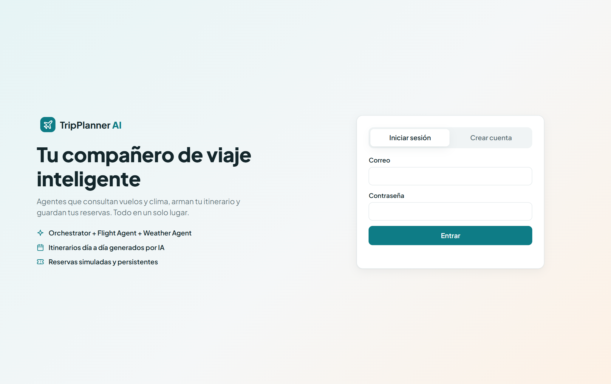
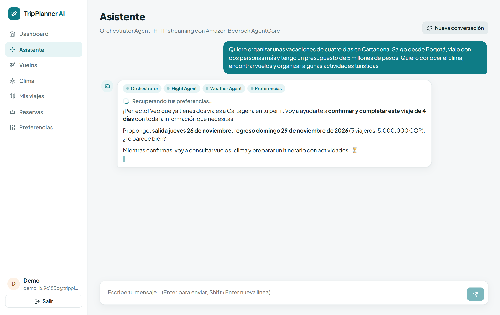
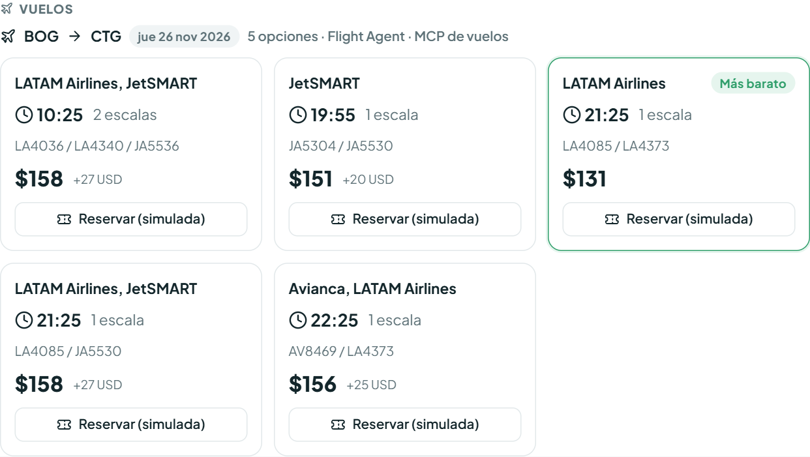
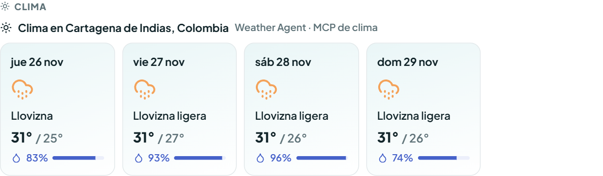
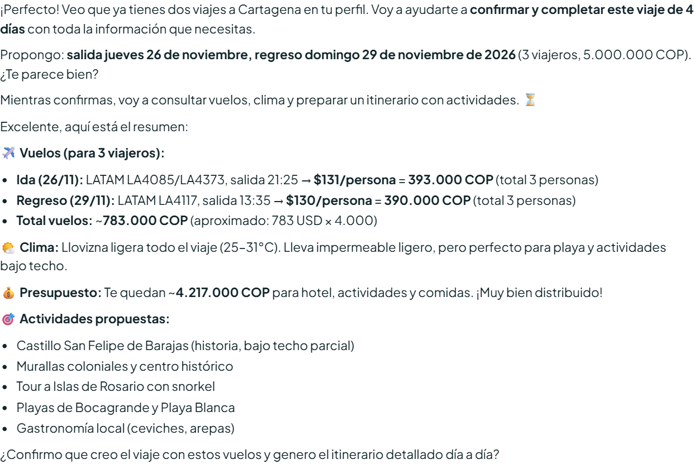
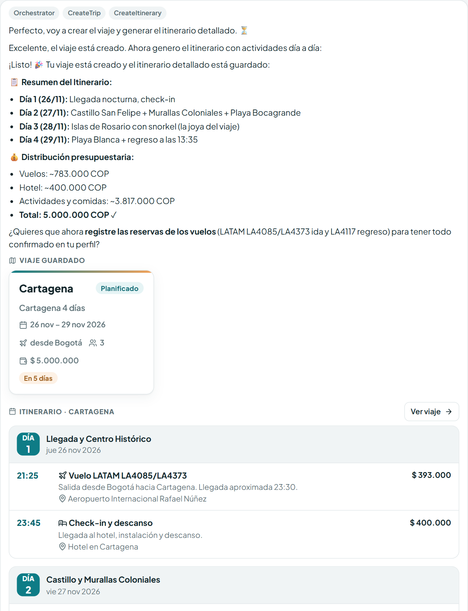
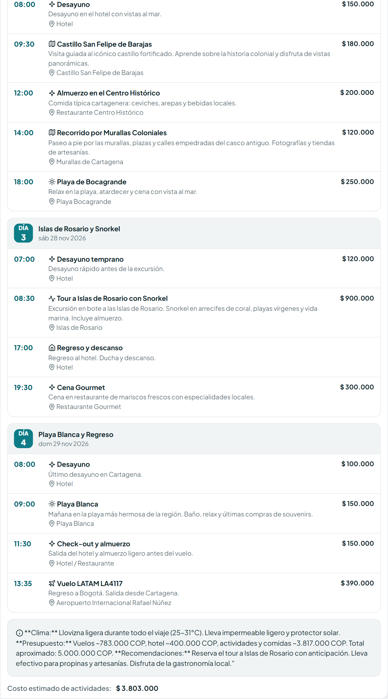
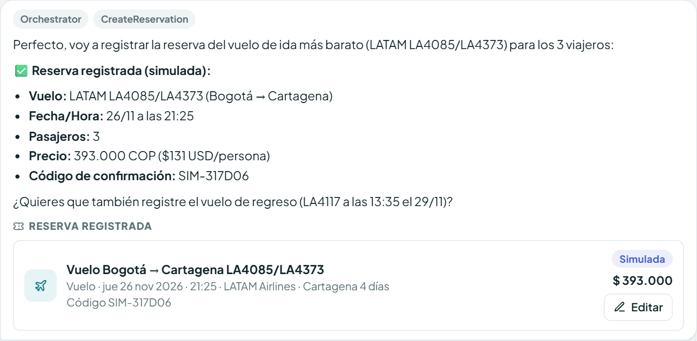
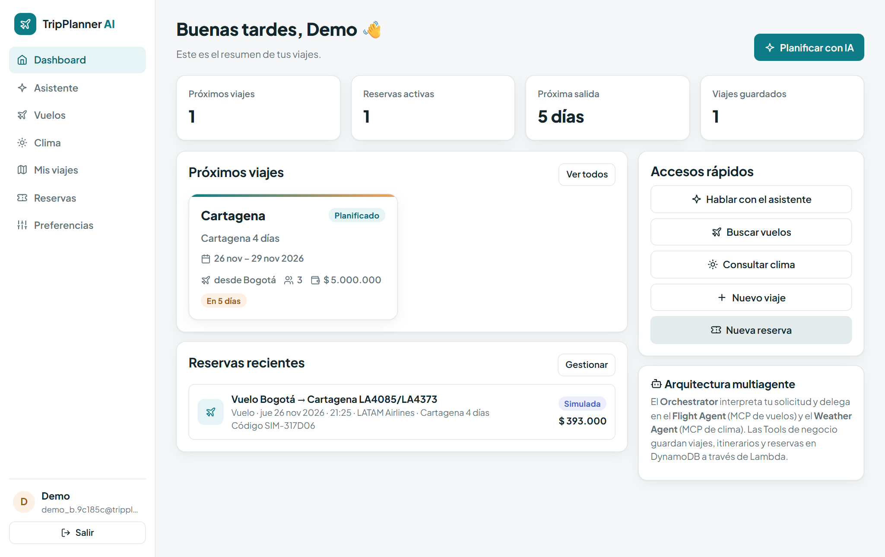
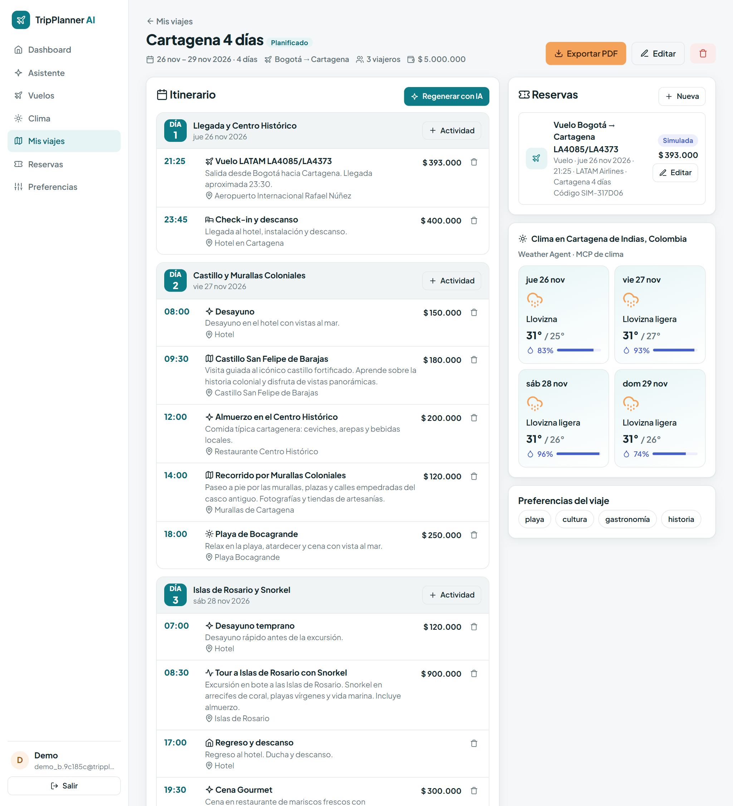
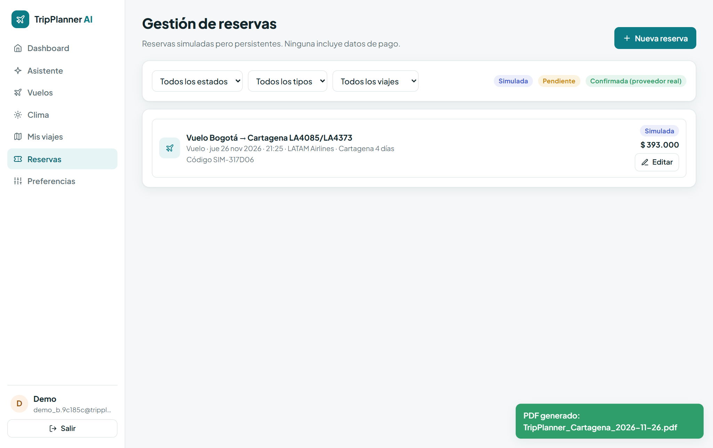
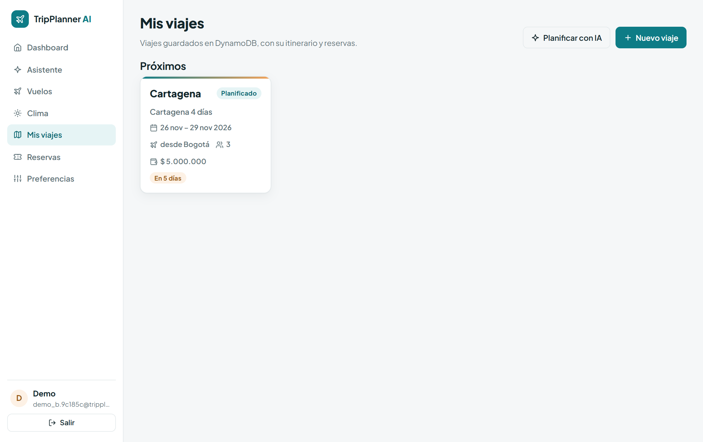
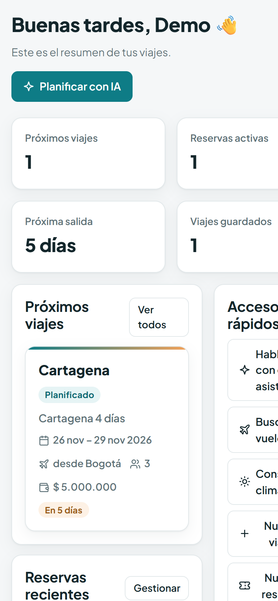